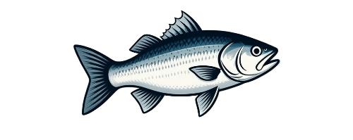
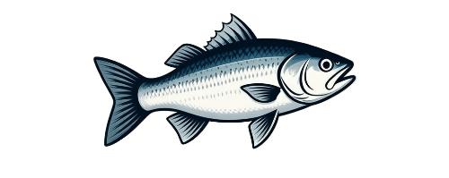
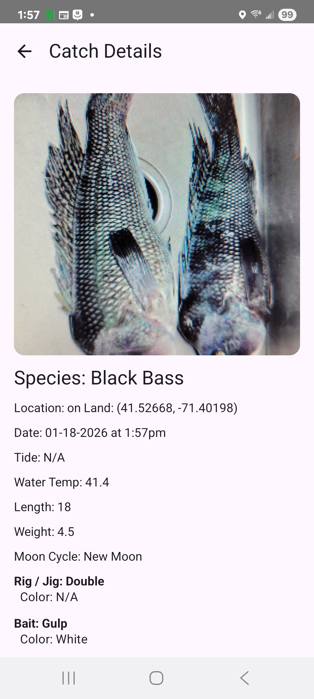
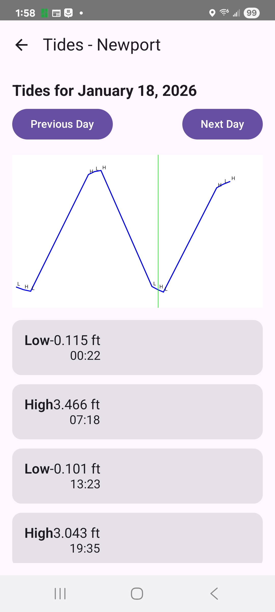
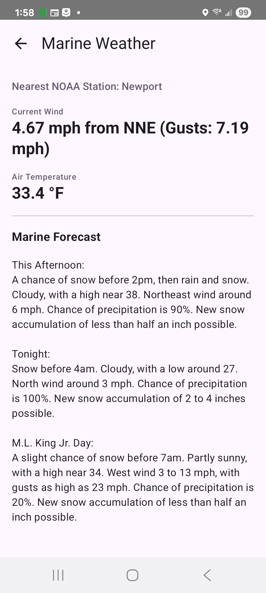
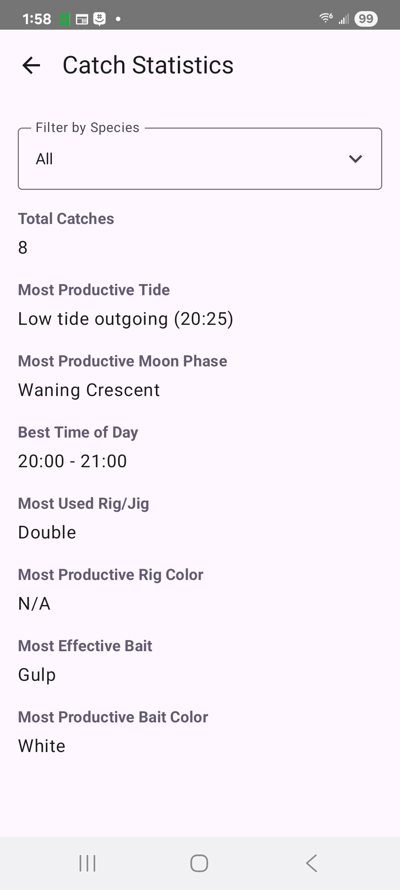
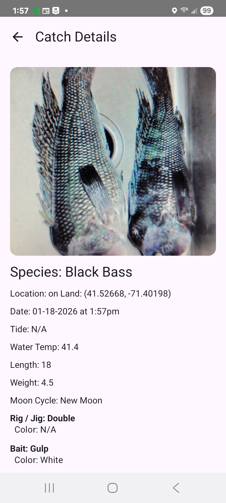
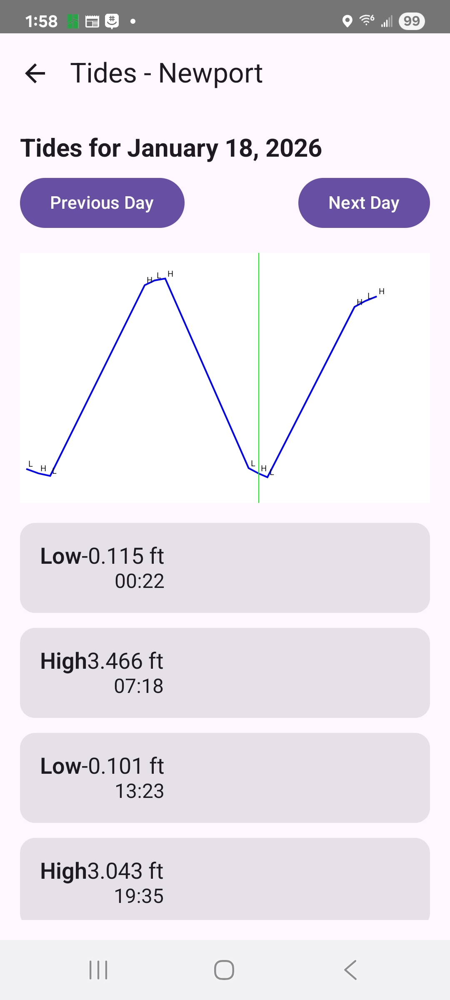
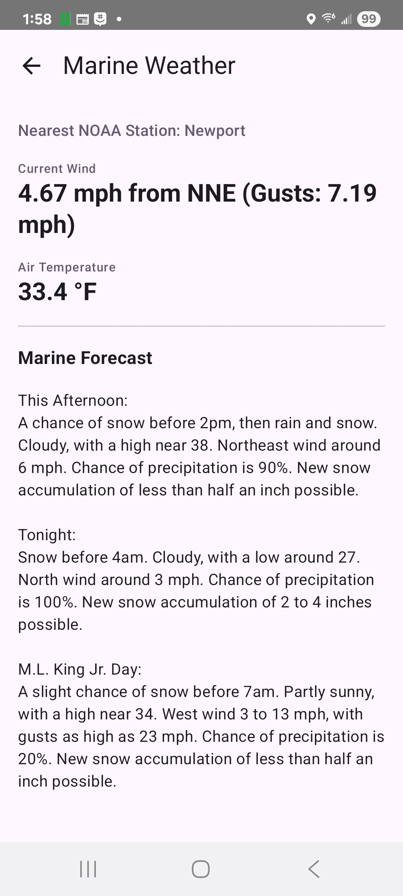
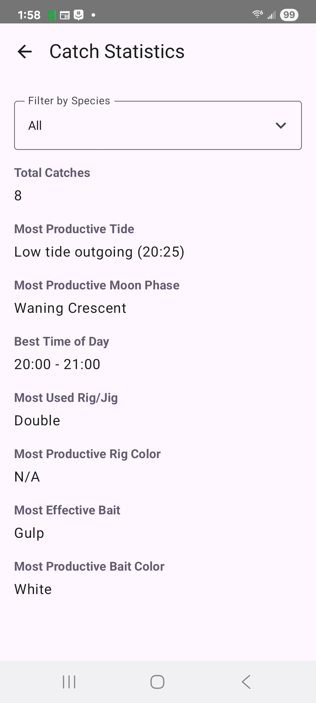

ReelYield: Your Ultimate Fishing Companion
Log catches, analyze stats, and gear up for success on the water.
Log catches, analyze stats, and gear up for success on the water.
ReelYield is a comprehensive Android app designed for fishermen to track their catches, view detailed statistics, and optimize their fishing trips. Whether you're a casual angler or a serious enthusiast, ReelYield helps you improve your yield by providing tools to log data, visualize patterns, and prepare your tackle.
Built with modern Android technologies, the app features an intuitive interface for logging species, locations, tides, weather conditions, and more. Export your logs, view maps of your catches, and get real-time marine insights—all in one place.
 








ReelYield makes gearing up effortless! In the "Tackle Up" section, browse and purchase high-quality fishing tackle directly from TackleDirect—America's leading online tackle retailer. From rods and reels to lures and lines, get everything you need with seamless integration, exclusive deals, and fast shipping. Never hit the water unprepared again!
Download ReelYield today from the Google Play Store and start reeling in bigger yields!